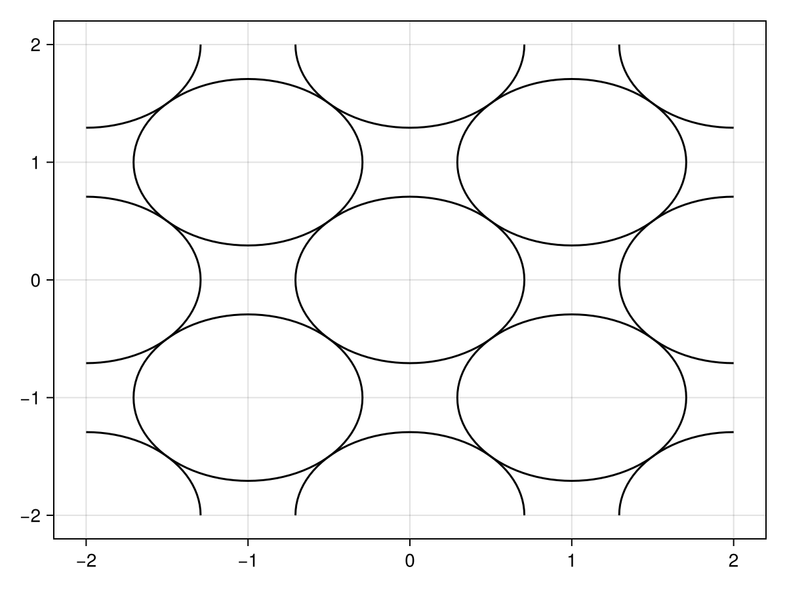
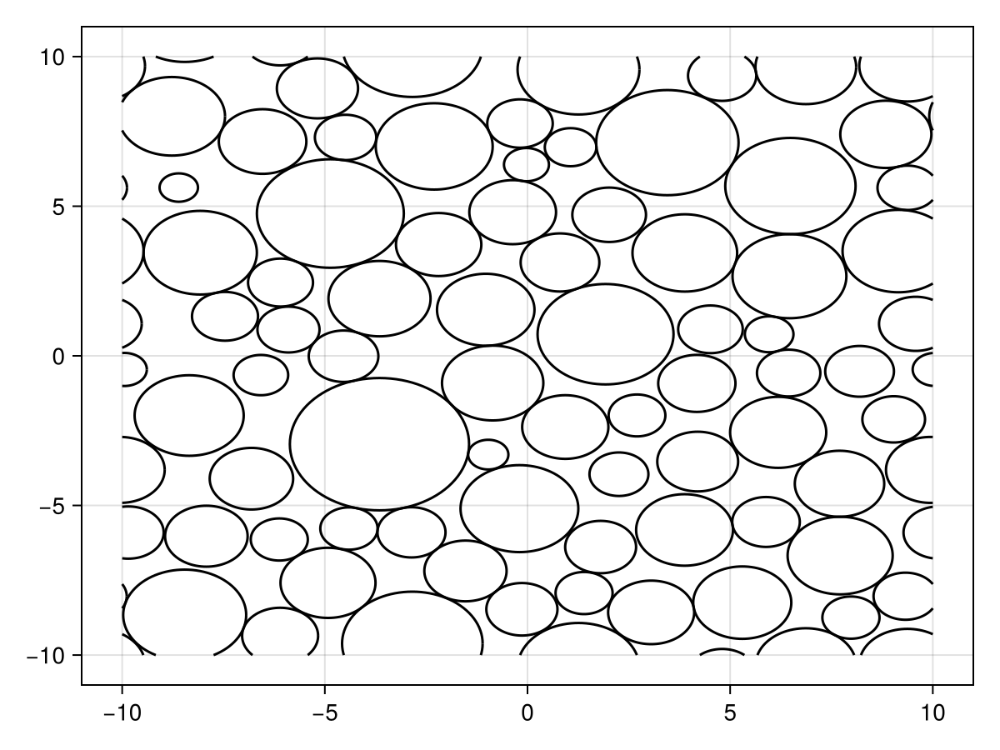

Obstructions to free diffusion
MCMRSimulator.jl comes with a variety of basic components that can be used to represent various components in the tissue microstructure.
| Component: | infinite walls | hollow cylinder | myelinated annuli | hollow sphere | mesh | bendy cylinder |
|---|---|---|---|---|---|---|
| Constructor (Julia) | Walls | Cylinders | Annuli | Spheres | Mesh | BendyCylinder |
| Constructor (CLI) | mcmr geometry create walls | mcmr geometry create cylinders or mcmr geometry create-random cylinders | mcmr geometry create annuli or mcmr geometry create-random annuli | mcmr geometry create spheres or mcmr geometry create-random spheres | Generate mesh from tissue samples or generative models (e.g., (Palombo et al., 2019), (Ginsburger et al., 2019), (Callaghan et al., 2020), (Villarreal-Haro et al., 2023)) | mcmr geometry create bendy-cylinder |
| Hinder diffusion | ✅ | ✅ | ✅ | ✅ | ✅ | |
| Surface relaxation | ✅ | ✅ | ✅ | ✅ | ✅ | |
| Magnetisation transfer | ✅ | ✅ | ✅ | ✅ | ✅ | |
| Generate off-resonance field | ✅ | ✅ | ✅ | ✅ | ||
| Different relaxation inside | ✅ | ✅ | ✅ | ✅ | ✅ | |
| Intrinsic dimensionality | 1 | 2 | 2 | 3 | 3 | 3 |
The constructors for these components all have a similar interface. Some expect certain component-specific keyword arguments (e.g., radius for Spheres and Cylinders, or the keywords regarding the myelin-induced off-resonance field produced by Cylinders or Annuli). MRI relaxation properties within the obstruction and collision parameters (stuck spins, magnetisation transfer rate & permeability) can be set using keyword arguments as described in the properties section. Finally, these constructors expect a set of keyword arguments that control their location. These arguments are identicaly across all constructors (although the expected input depends on the dimensionality of the component as listed in the table above):
position: Set the positions for each generated components (not used inMesh).repeats: Set the distance with which all components should be repeated.rotation: Applies a single rotation to the whole system.
Components with a lower dimensionality are defined by default along the x-axis (for dimensionality of 1) or the x-y plane (for dimensionality of 2). In other words, the normal of the Walls point in the x-axis by default, while the Cylinders point in the z-axis. Shifts and repeats should only be provided in this lower-dimensional space. The rotation keyword can be used to define these components along other lines/planes (see MCMRSimulator.get_rotation).
From the command line all of these keywords are available as flags, which can be seen by running:
mcmr geometry create walls/cylinders/annuli/spheres/bendy_cylinder --helpIn Julia, the easiest way to get the documentation for all keywords is to run:
?Walls/Cylinders/Annuli/Spheres/Mesh/BendyCylinderor by following the links in the table above.
For example, we can create two base cylinders, which repeat infinitely by running:
using MCMRSimulator
geometry = Cylinders(radius=sqrt(0.5), position=[[0, 0], [1, 1]], repeats=[2, 2])
Alternatively, the same configuration could be produced with a single cylinder by providing a rotation.
using MCMRSimulator
rotation = [
sqrt(0.5) sqrt(0.5) 0.
-sqrt(0.5) sqrt(0.5) 0.
0. 0. 1.
]
geometry = Cylinders(radius=sqrt(0.5), repeats=[sqrt(2), sqrt(2)], rotation=rotation)
Randomly distributed cylinders/annuli/spirals
A random set of positions and radii can be created using random_positions_radii. The user in this case sets a target density (70% in the example below) and over which length scale the configuration should repeat itself (20x20 micrometer in the example below).
(positions, outer_radii) = random_positions_radii((20, 20), 0.7, 2)From the command line this functionality is available by running mcmr geometry create-random cylinders/annuli/spheres.
These can be used to produce randomly distributed cylinders:
geometry = Cylinders(radius=outer_radii, position=positions, repeats=(20, 20))
When used as initialisation for annuli or spirals, an inner radius will also need to be computed:
geometry = Annuli(inner=0.8 .* outer_radii, outer=outer_radii, position=positions, repeats=(20, 20))